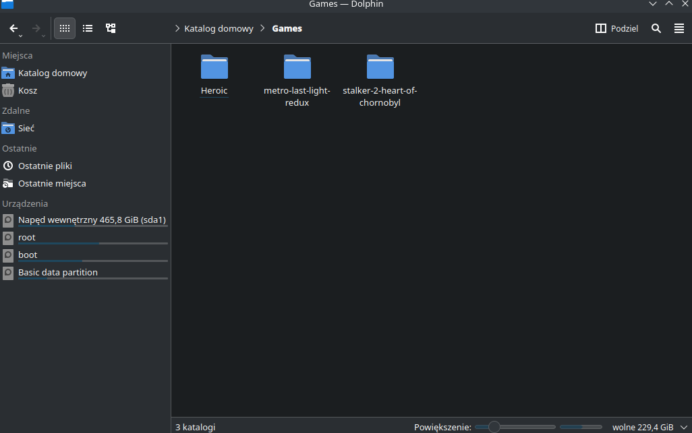
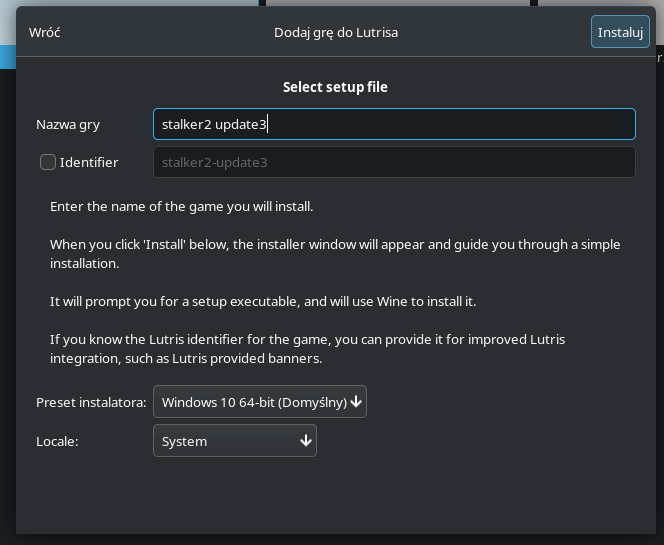
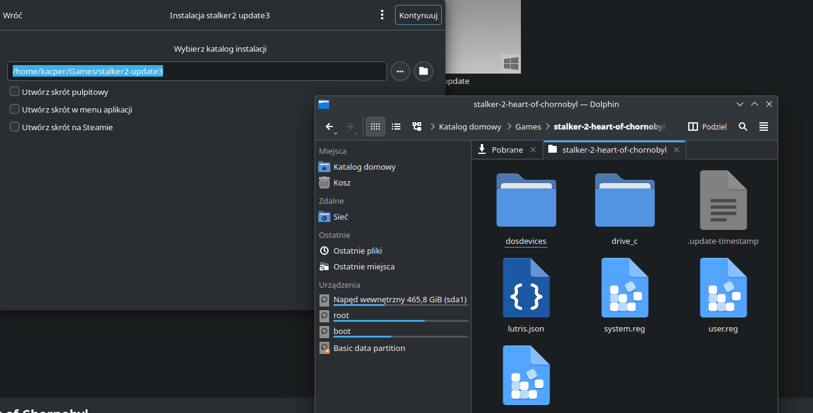
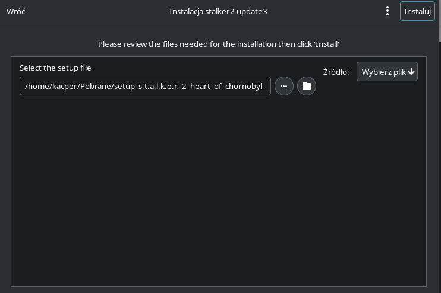
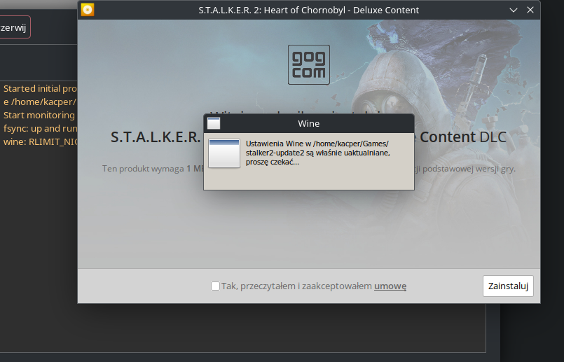
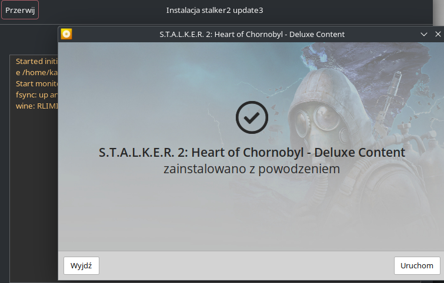

Jak zainstalować aktualizacje do gier instalowanych z plików lokalnych w Lutris w systemie Linux
1.Zainstaluj grę przez Lutris i upewnij się, że znajduje się w folderze Games w katalogu domowym.

2.Tworzymy nowa gre w Lutrisie i nadajemy jej dowolną nazwe.

3.W ustawieniach wybierz folder, w którym znajduje się gra, do której chcesz zainstalować aktualizację.

4. Wskaż plik .exe aktualizacji.

5.Uruchomi się instalator, który skopiuje pliki do odpowiedniego folderu.

6. Po zakończeniu instalacji zamknij okno i usuń zbędne skróty, które zostały utworzone.

7.Mozesz już odpalic zaktualizowaną grę
Ważne!:
Plik odpalany przez wine nie zainstaluje się, nie będzie widział gry lub zainstaluje się w innej lokalizacji niż gra